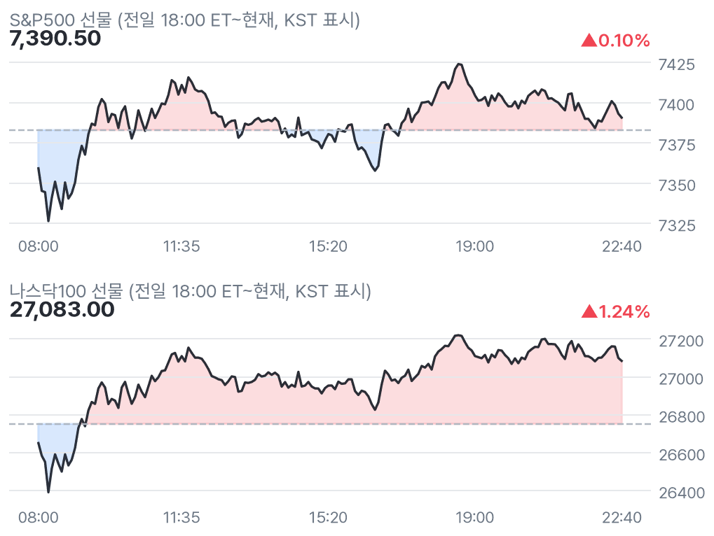
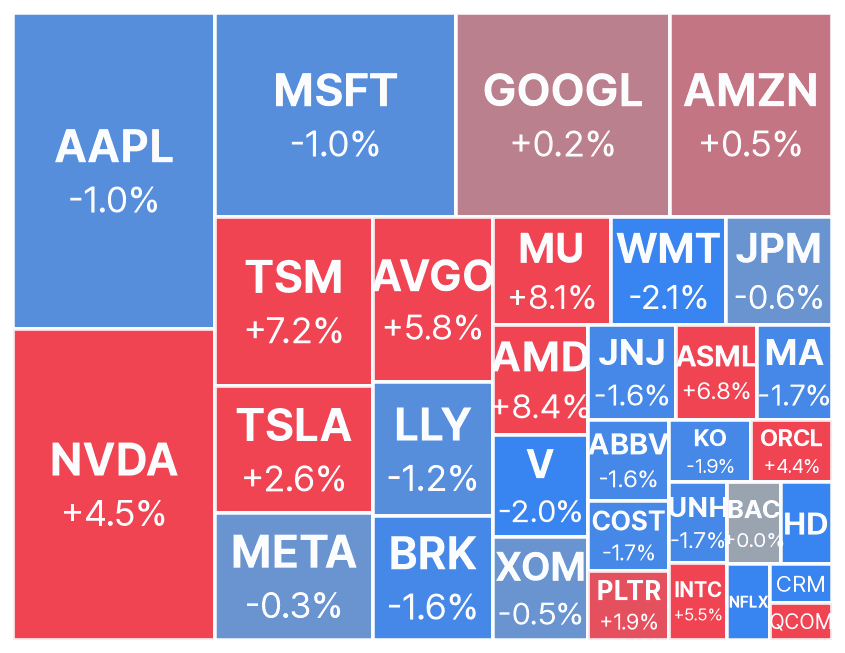
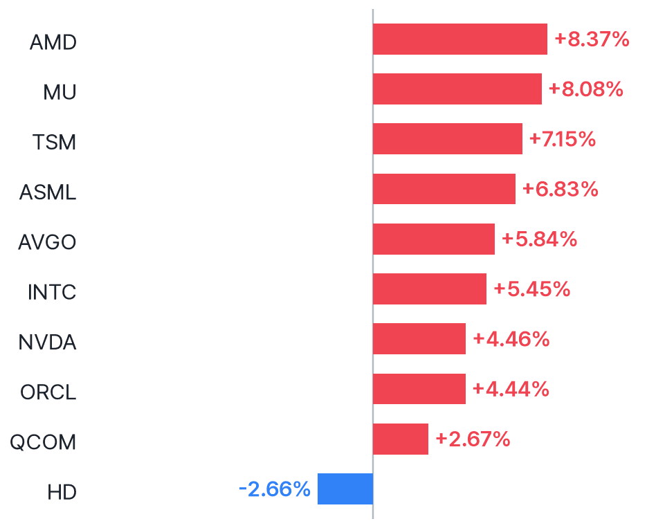
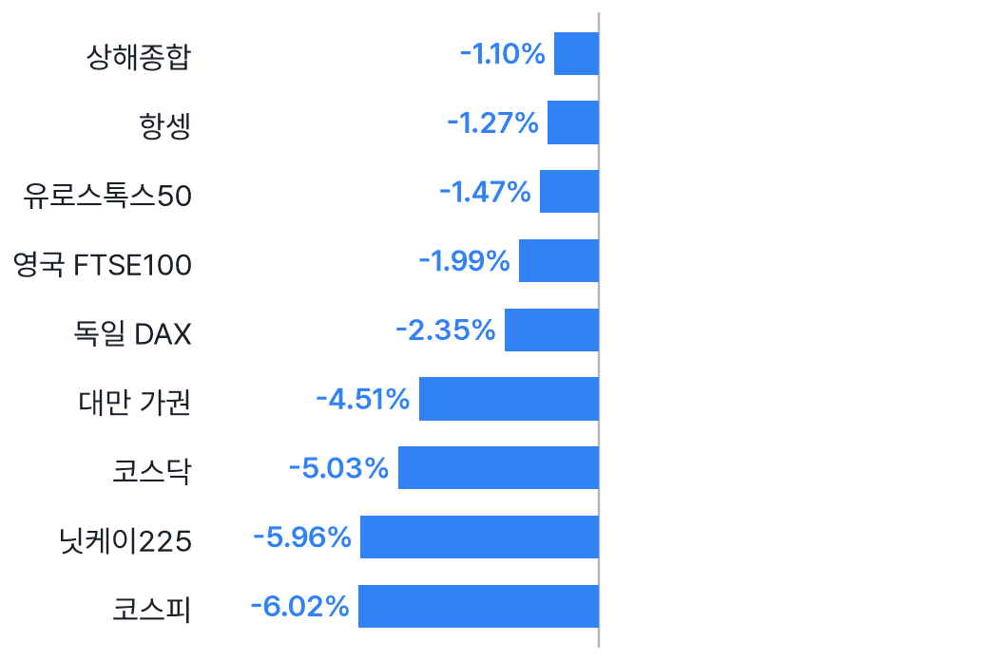
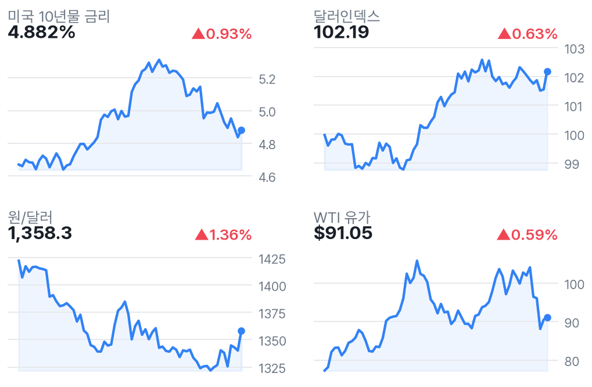

나스닥 선물 1.24%↑, 반도체 반등·고용은 예상 상회
✅ 핵심 요약
- 나스닥100 선물 +1.24%·다우 -0.94%…반도체 반등, 시장 전반 회복은 아직
- 10월 고용 +16.5만명(예상 6.5만), 실업률 4.1%(예상 4.2%)
- 시간당 임금 예상 +0.3%·실제치 확인 불가…고용 호조에도 금리 부담 경계
- AMD +8.37%·MU +8.08%; 미 10년물 4.882%·원/달러 1,358.3원
📊 주요 지표
🧭 시장 해석
수집된 뉴스핌·WSJ 헤드라인은 AI주 급락 뒤 반도체 저가 매수세를 반등 배경으로 지목한다. 나스닥100 선물 +1.24%와 다우 -0.94%의 차이는 전면적 위험선호 회복보다는 낙폭 되돌림이라는 해석에 무게를 싣는다.
CNBC 헤드라인상 고용은 예상을 웃돌았다. 경기 우려 완화와 금리 부담이 공존할 수 있다는 판단이다. 임금 실제치는 조회 차단·검색 부진으로 확인하지 못했다. 국내 반도체에는 미국 동종업체 반등이 참고 신호지만, 코스피 -6.02%와 원/달러 1,358.3원을 감안하면 개장 후 지속 여부가 중요하다.
22:30 고용보고서: 고용 호조·임금 확인 공백
수집된 CNBC 헤드라인상 비농업 고용 +16.5만명은 캘린더 예상 +6.5만명을 웃돌았고, 실업률 4.1%는 예상 4.2%보다 낮았다. 시간당 임금은 예상 +0.3%·이전 +0.1%이며 실제치는 확인하지 못했다. 노동부 원문 조회가 차단됐고 검색에서도 관련 실제치를 확보하지 못해 임금 서프라이즈와 인플레이션 평가는 유보한다. 선물 반등을 고용 발표 때문이라고 단정하지 않는다.
반도체 급반등과 지수 간 온도차
AMD +8.37%, MU +8.08%, TSM +7.15%, NVDA +4.46%로 반도체 반등이 두드러진다. 반면 MSFT -1.03%, AAPL -1.01%로 빅테크도 일제히 오르는 것은 아니다. 나스닥100 선물의 5일 수익률은 여전히 -5.09%이며, VIX 27.02는 경계가 남아 있음을 시사한다. 개별 실적 호재로 단정하지 않고 업종 낙폭 되돌림으로 본다.
📈 차트





🏦 애널리스트 · 리서치
- MA — Freedom Broker, Buy→Hold 하향목표가는 $620→$725로 상향됐지만 투자의견은 하향. 목표가 방향과 의견 방향을 구분해야 한다.
- COST — JP Morgan, 목표가 $1,015→$1,150Overweight 유지라는 의견. 프리마켓 -1.69%로 목표가 상향이 단기 주가 상승을 뜻하지는 않는다.
- QCOM — UBS·JP Morgan·TD Cowen 목표가 하향UBS $185→$180·Neutral, JP Morgan $215→$200·Neutral, TD Cowen $200→$185·Buy 유지라는 의견. 주가는 +2.67%.
미국 대형주 의견·목표가 변경 5건 (Yahoo)
- 의견 하향MA · Freedom BrokerBuy → Hold · 목표가 $620 → $725 · 11/06 11:15 KST
- 목표가 상향COST · JP MorganOverweight · 목표가 $1,015 → $1,150 · 11/06 08:27 KST
- 목표가 하향QCOM · UBSNeutral · 목표가 $185 → $180 · 11/06 09:08 KST
- 목표가 하향QCOM · JP MorganNeutral · 목표가 $215 → $200 · 11/06 07:51 KST
- 목표가 하향QCOM · TD CowenBuy · 목표가 $200 → $185 · 11/06 05:53 KST
📰 주요 뉴스
-
예상보다 강한 고용이 경기·금리 전망을 동시에 자극CNBC
-
아시아 마감과 미국 선물의 방향 차이, 반등 지속성 주목WSJ Markets
-
강세론자의 해석으로, 실적 개선 확인과는 구분 필요CNBC
미국·글로벌 헤드라인 18건
-
CNBC · 11/06 22:47
-
CNBC · 11/06 22:47
-
CNBC · 11/06 22:46
-
CNBC · 11/06 22:35
-
Bloomberg.com · 11/06 22:35
-
MarketWatch · 11/06 22:30
-
CNBC · 11/06 22:20
-
CNBC · 11/06 22:19
-
MarketWatch · 11/06 22:15
-
MarketWatch · 11/06 22:14
-
MarketWatch · 11/06 22:13
-
CNBC · 11/06 22:12
-
MarketWatch · 11/06 22:11
-
WSJ Markets · 11/06 22:11
-
MarketWatch · 11/06 22:09
-
MarketWatch · 11/06 22:08
-
MarketWatch · 11/06 22:07
-
MarketWatch · 11/06 22:03
애널리스트 관련 헤드라인 12건
-
MarketBeat · 11/06 22:22
-
MarketBeat · 11/06 22:18
-
Benzinga · 11/06 22:18
-
Benzinga · 11/06 22:12
-
Benzinga · 11/06 22:09
-
The Globe and Mail · 11/06 22:07
-
Benzinga · 11/06 22:02
-
Benzinga · 11/06 21:39
-
The Globe and Mail · 11/06 21:34
-
The Globe and Mail · 11/06 21:34
-
Simply Wall St · 11/06 21:32
-
The Globe and Mail · 11/06 20:48
국내 헤드라인 6건
-
뉴스핌 · 11/06 22:16
-
톱스타뉴스 · 11/06 21:34
-
KBS 뉴스 · 11/06 21:07
-
뉴스핌 · 11/06 16:18
-
바이라인네트워크 · 11/06 15:59
-
녹색경제신문 · 11/06 15:39
🗓️ 일정
경제지표·이벤트 (KST)
- 22:30🇺🇸 미국 Average Hourly Earnings m/m11/06 · 중요도 높음 · 예상 0.3% · 이전 0.1%
- 22:30🇺🇸 미국 Non-Farm Employment Change11/06 · 중요도 높음 · 예상 65K · 이전 29K
- 22:30🇺🇸 미국 Unemployment Rate11/06 · 중요도 높음 · 예상 4.2% · 이전 4.2%
- 00:00🇺🇸 미국 Prelim UoM Consumer Sentiment11/07 · 중요도 중간 · 예상 48.1 · 이전 46.3
- 00:00🇺🇸 미국 Prelim UoM Inflation Expectations11/07 · 중요도 중간 · 이전 4.7%
- 01:00🇯🇵 일본 BOJ Gov Ueda Speaks11/07 · 중요도 높음
오늘 미국 실적 발표 (장전=발표 완료 · 장후=새벽)
- ENB Enbridge Inc장전시총 $106.3B · EPS 예상 $0.36 · 시간외 ▲0.33%
- MRNA Moderna, Inc.장전시총 $103.2B · EPS 예상 ($1.10) · 시간외 ▼0.10%
- BAM Brookfield Asset Management장전시총 $86.4B · EPS 예상 $0.44 · 시간외 ▲1.03%
- HUM Humana Inc.장전시총 $50.1B · EPS 예상 ($1.03) · 시간외 ▼0.43%
- HMC Honda Motor Company, Ltd.시간미정시총 $45.7B · EPS 예상 -
- VST Vistra Corp.장전시총 $40.4B · EPS 예상 $2.94 · 시간외 ▲6.52%
- UI Ubiquiti Inc.시간미정시총 $33.9B · EPS 예상 $3.82
- ECHO EchoStar Corporation장전시총 $28.7B · EPS 예상 ($0.42) · 시간외 ▲2.31%
- PPL PPL Corporation장전시총 $26.9B · EPS 예상 $0.53 · 시간외 ▲2.23%
👀 체크포인트
- 장전 실적VST +6.52%·예상 EPS $2.94: 발표 실제치·가이던스 확인 필요
- 23:30미국 정규장 개장: 반도체 반등 지속·다우 약세 완화·금리 반응 확인
- 11/07 00:00미시간대 소비심리 예비치(예상 48.1·이전 46.3), 기대인플레이션(이전 4.7%)
- 11/07 01:00우에다 일본은행 총재 발언: 엔화와 글로벌 금리 변동성 확인